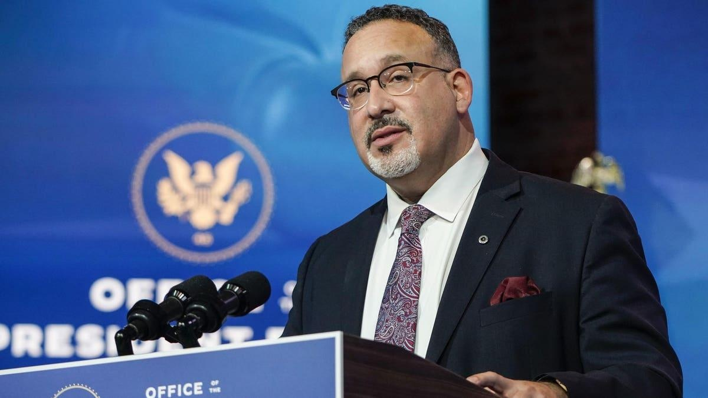

855,000 Borrowers To Receive Student Loan Forgiveness Under Biden PlanThe Biden administration has approved student loan forgiveness for a new group of borrowers under a temporary initiative designed to remedy past problems with income-driven repayment plans. New data released by the Education Department this week indicates that hundreds of thousands of borrowers have, or will, receive relief under the program. And more loan forgiveness is likely on the way. "For years, millions of eligible borrowers were unable to access the student debt relief they qualified for, but that's all changed thanks to President Biden and this Administration's relentless efforts to fix the broken student loan system," said U.S. Secretary of Education Miguel Cardona in a statement on Wednesday. “Today's announcement builds on everything our administration has already done to protect students from unaffordable debt, make repayment more affordable, and ensure that investments in higher education pay off for students and working families." Here’s what borrowers need to know. Student Loan Forgiveness Through IDR Adjustment Initiative The latest wave of student loan forgiveness approvals is through the IDR Account Adjustment, a Biden administration initiative first enacted last year. The adjustment is designed to be a fix for systemic historical problems with income-driven repayment. These plans, which tie a borrower’s monthly payments to their income and family size, can lead to eventual loan forgiveness after 20 or 25 years, or in as little as 10 years for borrowers pursuing Public Service Loan Forgiveness. But both PSLF and IDR have been riddled with problems for years. Poor record-keeping and communication by loan servicers, and inadequate oversight by the government, led to many borrowers being improperly steered into costly deferments or forbearances. Others did not receive the student loan forgiveness credit that they were entitled to under federal law. The IDR Account Adjustment is designed to remedy these longstanding issues. Under the program, the Education Department can credit borrowers with time toward their 20- or 25-year student loan forgiveness term (or 10 years for public service borrowers pursuing PSLF) that wouldn’t have counted under previous rules. This includes many past periods of repayment (regardless of the actual repayment plan), as well as some past periods of deferment and forbearance. Next Batch Of Student Loan Forgiveness Approvals For IDR And PSLF Under Biden Initiative In July, the Biden administration announced that more than 800,000 borrowers were approved for $39 billion in student loan forgiveness under the IDR account adjustment. Most of these borrowers received discharges the following month. The Education Department is evaluating borrowers for student loan forgiveness eligibility on a rolling basis under the IDR account adjustment, generally every two months. On Wednesday, the department announced another 51,000 borrowers had been approved for IDR student loan forgiveness totaling $2.8 billion. These borrowers received notifications in September that they qualify. Taking into account the latest data, the Biden administration has now approved “[n]early $42 billion” in student loan forgiveness under the IDR Account Adjustment “for almost 855,000 borrowers.” An additional 53,000 borrowers were approved for $5.2 billion in student loan forgiveness through the PSLF program, according to the announcement. What’s Next For Biden Student Loan Forgiveness Initiatives? Borrowers covered by the latest announcement could start receiving loan forgiveness (and seeing their balances go to $0) later this month. Student loan servicers will notify borrowers of a discharge sometime after October 22. Meanwhile, the Biden administration is moving forward to develop a new, broader student loan forgiveness plan to replace the one that the Supreme Court struck down in June. The Education Department just released new details on the possible scope of that plan. This new program may provide borrowers who have had longstanding issues and hardships with another pathway to student debt relief. However, the new initiative will not be finalized or available until sometime next year. |
 |